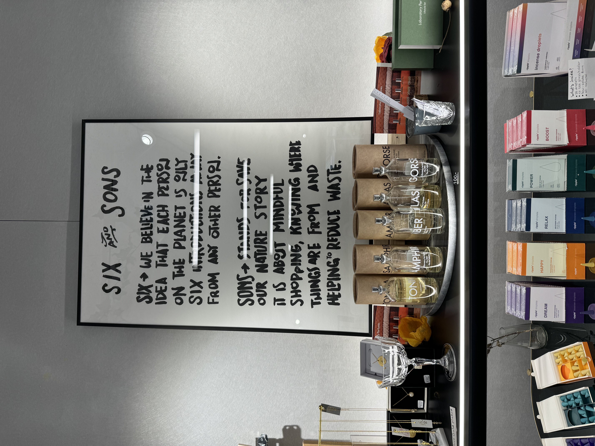
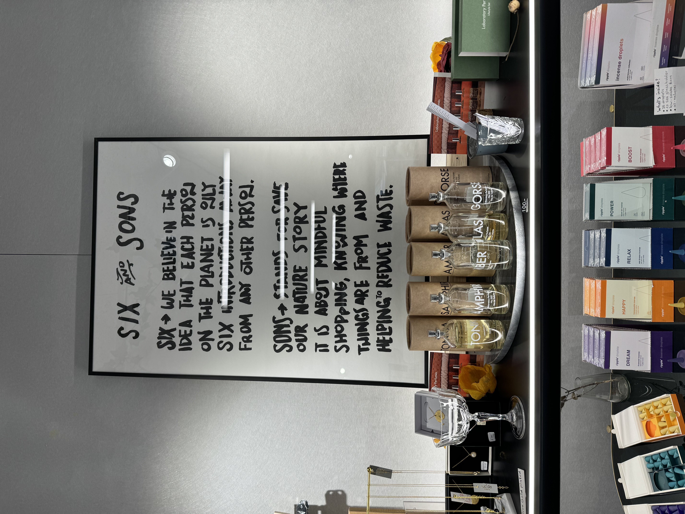

Voor het individuele project heb ik gekozen om een fanpagina te maken over SIX & SONS
SIX & SONS biedt een platform aan voor merken om hun duurzaame verhaal te vertellen.
SIX staat voor het idee dat alle mensen zes of minder sociale connecties van elkaar verwijderd zijn.
SONS staat voor Save Our Nature Story. De winkel heeft merken die zich richten op het redden van onze planeet.
 
